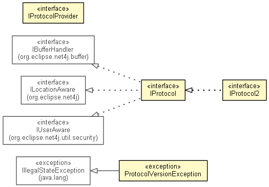

-
Interface Summary Interface Description IProtocol<INFRA_STRUCTURE> IProtocol2<INFRA_STRUCTURE> IProtocolProvider Providesprotocolinstances for given types. -
Exception Summary Exception Description ProtocolVersionException An exception that indicates mismatch between the versions of two protocol peer implementations.
Package org.eclipse.net4j.protocol Description
The Net4j transport layer concepts for dealing with protocols.